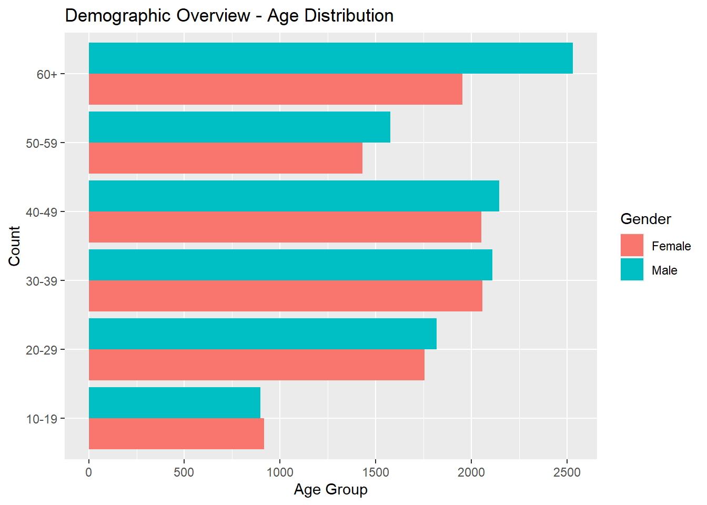
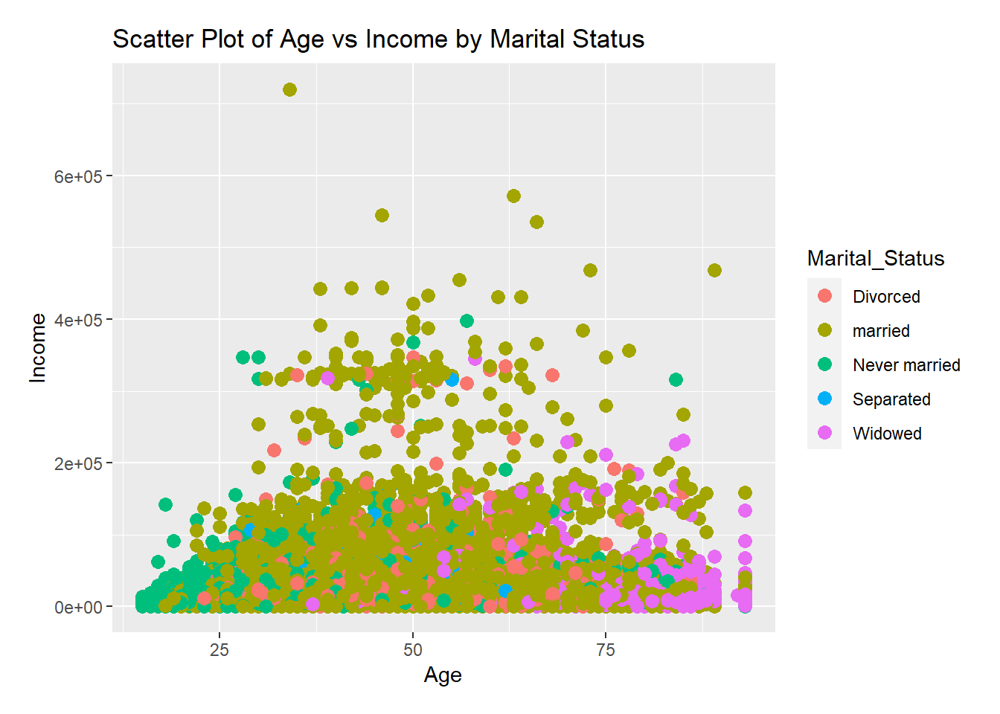

I used tidyverse documentation (Wickham 2019) for data cleaning and R Programming code for exploration and visualization (R Core Team 2021) and Quarto (MacFarlane 2022) documentations for markdown.
── Attaching core tidyverse packages ──────────────────────── tidyverse 2.0.0 ──
✔ dplyr 1.1.3 ✔ readr 2.1.4
✔ forcats 1.0.0 ✔ stringr 1.5.1
✔ lubridate 1.9.3 ✔ tibble 3.2.1
✔ purrr 1.0.2 ✔ tidyr 1.3.0
── Conflicts ────────────────────────────────────────── tidyverse_conflicts() ──
✖ dplyr::filter() masks stats::filter()
✖ dplyr::lag() masks stats::lag()
ℹ Use the conflicted package (<http://conflicted.r-lib.org/>) to force all conflicts to become errors
2 Reading dataset into RStudio
Code
data <-read.csv("C:/Users/gsaola/Downloads/data-1.csv")head(data)
ID Person_ID Age Mar_Stat INC Female H8 Eth
1 37 1 20 Never married 10000 1 0 White
2 37 2 19 Never married 5300 1 0 White
3 37 3 19 Never married 4700 1 0 Black
4 241 1 50 Never married 32500 1 0 White
5 242 1 29 Never married 30000 1 0 White
6 377 1 69 Never married 51900 1 0 White
Highest.Ed
1 Some HE
2 Some HE
3 Some HE
4 Masters or higher
5 Bachelors Degree
6 Less than Secondary School
3 Data preprocessing & feature engineering
3.1 Handling mising values
Missing values spotted in the data are below: Mar_Sat=6,144 | INC=6,173 | Highest.Ed=1,123
ID Person_ID Age Marital_Status Income Gender all_rooms_behind_door
1 37 1 20 Never married 10000 Male Yes
2 37 2 19 Never married 5300 Male Yes
3 37 3 19 Never married 4700 Male Yes
4 241 1 50 Never married 32500 Male Yes
5 242 1 29 Never married 30000 Male Yes
6 377 1 69 Never married 51900 Male Yes
Ethnicity Highest_education Age_Group
1 White Some HE 20-29
2 White Some HE 10-19
3 Black Some HE 10-19
4 White Masters or higher 50-59
5 White Bachelors Degree 20-29
6 White Less than Secondary School 60+
4 Data Visualization
4.1 Demographic Overview - Population Pyramid
The stacked bar below shows the distribution of age by gender for guidance on product curation and marketing strategies tailored to specific age groups.
Code
ggplot(clean_data, aes(x = Age_Group, fill = Gender)) +geom_bar(stat ="count", position ="dodge") +coord_flip() +labs(title ="Demographic Overview - Age Distribution",x ="Count",y ="Age Group")

4.2 Marital Status Composition - Pie Chart
The pie chart below displays the distribution of individuals across different marital statuses, offering a quick overview of family structures.
Code
ggplot(clean_data, aes(x ="", fill = Marital_Status)) +geom_bar(width =1, stat ="count") +coord_polar(theta ="y") +labs(title ="Marital Status Composition",fill ="Marital Status") +theme_void()
4.3 Income Distribution - Histogram
The graph below shows income distribution, explaining how pricing strategies and products can be affected by customer income.
Code
ggplot(clean_data, aes(x = Income)) +geom_histogram(binwidth =5000, fill ="skyblue", color ="black") +labs(title ="Income Distribution",x ="Annual Income (in pounds)",y ="Count")
4.4 Privacy Preferences - Stacked Bar Chart
The chart below shows the privacy preference of individuals in the data which can be factored into product design.
Code
ggplot(clean_data, aes(x =factor(all_rooms_behind_door), fill =factor(all_rooms_behind_door))) +geom_bar() +labs(title ="Privacy Preferences",x ="Response to Question H8",y ="Count")
plot6 <- clean_data %>%count(Age_Group) %>%ggplot(aes(x = Age_Group, y = n)) +geom_bar(stat ="identity") +ggtitle("Age Group Distribution") +theme(axis.text.x =element_text(size =15))plot6
4.7 Education levels by gender
Code
plot7 <-ggplot(clean_data, aes(x = Highest_education, fill = Gender)) +geom_bar(position ="dodge", show.legend =TRUE) +labs(title ="Distribution of Education Levels by Gender")plot7 +theme(axis.text.x =element_text(angle =45, hjust =1))
4.8 Income distribution by family structure and age
Below is the income distribution by family structure, providing further insight to which to target for family products and premium services.
Code
ggplot(clean_data, aes(x = Age, y = Income, color = Marital_Status)) +geom_point(size =3) +# Adjust the size as neededtheme(plot.margin =unit(c(0.5, 0.5, 0.5, 0.5), "cm") # Adjust the margins as needed ) +labs(title ="Scatter Plot of Age vs Income by Marital Status")

5 Conclusion
Older people are more than the young ones and therefore, it does not fully represent the population of customers that can be targeted for this business.
Secondly, majority of the people in the dataset are low income earners, if further details on location could be provided, further analysis could be carried out to know if a new area should be considered for the premium products
6 Recommendation
Market research should be carried out to know the preferences of customers when it comes to home products and services that best suit their age group, income and privacy.
A well distributed sample of data should be provided, such that would represent the entire population.
Code
References
MacFarlane, John. 2022. “Quarto: A Scientific Authoring and Publishing System.” 2022.
R Core Team. 2021. R: A Language and Environment for Statistical Computing. Vienna, Austria: R Foundation for Statistical Computing.
Wickham, Hadley. 2019. Tidyverse: Easily Install and Load the ’Tidyverse’.